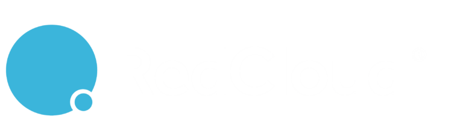

Fresh Red101 reviews mention OTP delay, account setup, seller visibility, wallet trust, and support gaps.
Useful next stepTag those events by market and release, then fix the highest-risk path before the next RedAI market rollout.
Prepared for Michael Sundalskliev
A short technical brief on RedCloud's AI rollout, Red101 trust paths, and where a senior squad could reduce delivery load.
Saw RedCloud hiring an AI Engineer while RedAI Strategy moves into live customer use. That usually means model work, data quality, and production release paths all need help at once.

RedAI, Red101, and TradeX now carry the same promise: better trade decisions from live market data.
The AI Engineer signal says RedCloud is moving from platform promise to product delivery. RedAI Strategy is already live for enterprise FMCG customers in Nigeria, while RAID is still moving toward deeper use. That creates a tight loop between data feeds, model checks, release safety, and support. Red101 reviews point to trust paths like OTP, wallet, seller discovery, and account setup. If these paths stay noisy, RedAI recommendations can look wrong even when the model is sound.
Fresh Red101 reviews mention OTP delay, account setup, seller visibility, wallet trust, and support gaps.
Useful next stepTag those events by market and release, then fix the highest-risk path before the next RedAI market rollout.
The Red101 product page is much heavier than RedAI Global on mobile.
Useful next stepRemove render blockers and track each change against partner discovery and candidate traffic.
Engagement model: a dedicated squad under RedCloud's PO or engineering lead for a six-week pilot.
Trace one RedAI Strategy recommendation from source tables to user action, including feature freshness, model version, and support handoff.
Instrument OTP, wallet, seller discovery, and order events by market, app version, payment partner, and device class.
Build automated checks for stale inventory signals, failed partner responses, and risky releases before they reach Red101 retailers.
Ship a small production pilot with weekly demos, clear rollback rules, and a handover for your internal team.
Elinext is a full-cycle software development company, active since 1997, with about 700 in-house specialists and no freelancers. For a RedAI pilot, the useful parts are AI/ML, data engineering, backend, QA, and DevOps under one delivery lead. Elinext holds ISO 9001 and ISO 27001, which matters when trade data, payments, and support logs are involved. Teams have served Siemens, Broadcom, and Volkswagen. That gives RedCloud a senior bench while your platform team keeps control.

Retail demand models using Python and LightGBM.
Read the case study
Market data transformed into clear risk dashboards.
Read the case study